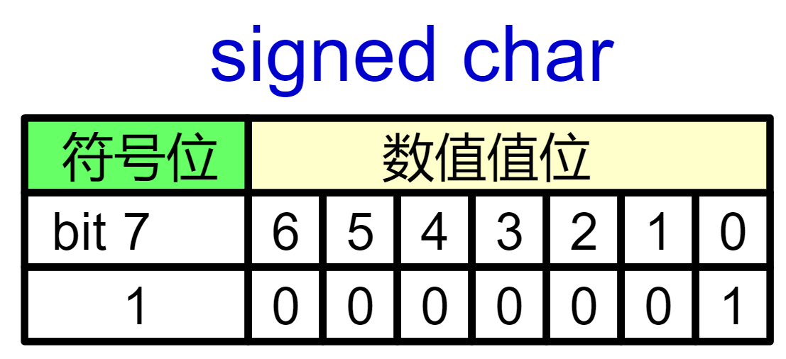
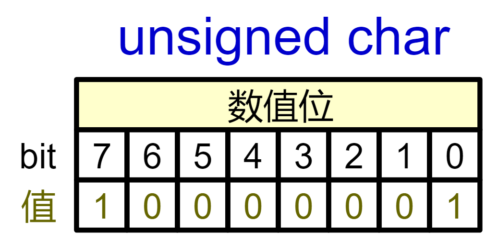
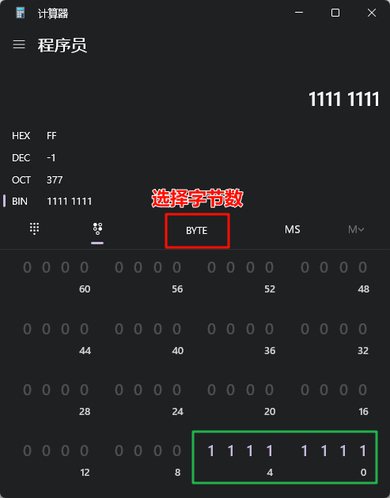

<!DOCTYPE lake>
<h1 data-lake-id="tVepw" id="tVepw"><span data-lake-id="u9a8ff85f" id="u9a8ff85f">1&gt; 奇怪的数字</span></h1><span class="yuque-card-unsupported">[codeblock]</span><span class="yuque-card-unsupported">[codeblock]</span><p data-lake-id="ubbfb92ce" id="ubbfb92ce"><span data-lake-id="uf6ec02d3" id="uf6ec02d3">❓</span><span data-lake-id="u49dafd97" id="u49dafd97">呦呵，为什么 129 会变成 </span><span class="lake-fontsize-18" data-lake-id="u4e8635ae" id="u4e8635ae" style="color: #DF2A3F">-127</span><span data-lake-id="uf4bac0fd" id="uf4bac0fd">？ </span></p><hr/><h1 data-lake-id="PE7yx" id="PE7yx"><span data-lake-id="u1a0b66f5" id="u1a0b66f5">2&gt; 实验验证</span></h1><h2 data-lake-id="PyqC9" id="PyqC9"><span data-lake-id="ud7caab02" id="ud7caab02">2.1&gt; 查看10进制值变化</span></h2><span class="yuque-card-unsupported">[codeblock]</span><span class="yuque-card-unsupported">[codeblock]</span><p data-lake-id="u5e3caa49" id="u5e3caa49"><span data-lake-id="u910e3d54" id="u910e3d54">从128开始就"不正常"了！</span></p><hr/><h2 data-lake-id="clAEF" id="clAEF"><span data-lake-id="ue6c49465" id="ue6c49465">2.2&gt; 查看16进制值变化</span></h2><p data-lake-id="uc1dc7f5b" id="uc1dc7f5b"><span data-lake-id="ua5a20db5" id="ua5a20db5">通过查看16进制值，清楚查看内存存储的实际值</span></p><span class="yuque-card-unsupported">[codeblock]</span><p data-lake-id="ued4c67f5" id="ued4c67f5"><span data-lake-id="ude70111f" id="ude70111f">​</span><br/></p><p data-lake-id="ub41a3bdb" id="ub41a3bdb"><br/></p><p data-lake-id="u8d0fb74c" id="u8d0fb74c"></p><hr/><h1 data-lake-id="WQVvB" id="WQVvB"><span data-lake-id="u9038d3f3" id="u9038d3f3">3&gt; char的符号性与范围</span></h1><p data-lake-id="ua81a5625" id="ua81a5625"><span data-lake-id="u4e156de4" id="u4e156de4">✅</span><span data-lake-id="ub70cc0ea" id="ub70cc0ea">在大多数系统(如x86/gcc)上，</span><code data-lake-id="uadfe7892" id="uadfe7892"><span data-lake-id="ua76f2998" id="ua76f2998">char</span></code><span data-lake-id="ub473e631" id="ub473e631">默认是有符号的(</span><code data-lake-id="ud2bc7db2" id="ud2bc7db2"><span data-lake-id="ub01e7e7d" id="ub01e7e7d" style="color: #2F4BDA">signed char</span></code><span data-lake-id="u87d68ee9" id="u87d68ee9">), </span><code data-lake-id="udd76200a" id="udd76200a"><span data-lake-id="u7010b5df" id="u7010b5df">signed</span></code><span data-lake-id="u36735279" id="u36735279">关键字可省略不写；</span></p><span class="yuque-card-unsupported">[codeblock]</span><p data-lake-id="ue6368fc2" id="ue6368fc2"><span data-lake-id="u5a7af930" id="u5a7af930">✅</span><span data-lake-id="u0cf5111d" id="u0cf5111d">char 类型的范围：</span><code data-lake-id="u5a727bd1" id="u5a727bd1"><span data-lake-id="u0b251ff5" id="u0b251ff5">-128 ~ 127</span></code></p><hr/><h1 data-lake-id="Qh6ej" id="Qh6ej"><span data-lake-id="u690b8c6b" id="u690b8c6b">4&gt; 补码转原码</span></h1><p data-lake-id="uee3244e7" id="uee3244e7"><span data-lake-id="ufadaf611" id="ufadaf611">为什么 129 会变成 </span><span class="lake-fontsize-18" data-lake-id="uafdec07d" id="uafdec07d" style="color: #DF2A3F">-127</span><span data-lake-id="ub9f6dc13" id="ub9f6dc13">？</span></p><p data-lake-id="u0013a4a2" id="u0013a4a2"><span data-lake-id="ueff22845" id="ueff22845">步骤1：</span></p><span class="yuque-card-unsupported">[codeblock]</span><p data-lake-id="ufccdf925" id="ufccdf925"><span data-lake-id="u53d8601e" id="u53d8601e">步骤2：</span></p><span class="yuque-card-unsupported">[codeblock]</span><p data-lake-id="u5fc4d358" id="u5fc4d358"><span data-lake-id="u4242e237" id="u4242e237">可以看出，将1000 0001(129) 赋值给char类型时，把最高位看为了符号位，所以才会出现负数；</span></p><p data-lake-id="ua42cc38d" id="ua42cc38d"><span data-lake-id="ua555e997" id="ua555e997">所以在使用变量是，要注意类型的范围；</span></p><p data-lake-id="u07af64ce" id="u07af64ce"><span data-lake-id="u80cdfc9f" id="u80cdfc9f">❓</span><span data-lake-id="u0955d3bc" id="u0955d3bc">如果我非要8位数据存129呢？</span></p><hr/><h1 data-lake-id="VZ1uz" id="VZ1uz"><span data-lake-id="ub802a6a9" id="ub802a6a9">5&gt; unsigned char的符号性与范围</span></h1><span class="yuque-card-unsupported">[codeblock]</span><p data-lake-id="u646feffd" id="u646feffd"><br/></p><span class="yuque-card-unsupported">[codeblock]</span><p data-lake-id="u0fd3c484" id="u0fd3c484"><span data-lake-id="ue4592389" id="ue4592389">✅</span><code data-lake-id="ubcefc185" id="ubcefc185"><span data-lake-id="ue0ccb969" id="ue0ccb969" style="color: #2F4BDA">unsigned char</span></code><span data-lake-id="uc933a2fd" id="uc933a2fd"> 的8位数据中没有符号位，全是数值位;</span></p><p data-lake-id="u597301c8" id="u597301c8"><span data-lake-id="ube9a8265" id="ube9a8265">✅</span><code data-lake-id="uaab01fb1" id="uaab01fb1"><span data-lake-id="u0cef443e" id="u0cef443e" style="color: #2F4BDA">unsigned char</span></code><span data-lake-id="ucd014de8" id="ucd014de8">类型的范围：</span><code data-lake-id="u535e22ca" id="u535e22ca"><span data-lake-id="uf4c2c5b6" id="uf4c2c5b6">0 ~ 255</span></code><span data-lake-id="ua0613719" id="ua0613719">，对应的16进制就是(0x00~0xFF);</span></p><hr/><h1 data-lake-id="W7f1b" id="W7f1b"><span data-lake-id="u1e8ecd2d" id="u1e8ecd2d">🐻</span><span data-lake-id="u09188946" id="u09188946">实践练习</span></h1><p data-lake-id="u27a03b0f" id="u27a03b0f"><span data-lake-id="u356bd8db" id="u356bd8db">通过查阅资料和程序验证，将下面表格补充完整；</span></p><table class="lake-table" data-lake-id="W4UKx" id="W4UKx" margin="true" style="width: 694px"><colgroup><col width="187"/><col width="80"/><col width="174"/><col width="253"/></colgroup><tbody><tr data-lake-id="u8f470db1" id="u8f470db1"><td data-lake-id="u4328b232" id="u4328b232" style="background-color: #C1E77E; vertical-align: middle"><p data-lake-id="uebbd0eef" id="uebbd0eef" style="text-align: center"><span data-lake-id="u90aa5ef4" id="u90aa5ef4">  数据类型</span></p></td><td data-lake-id="u19551dce" id="u19551dce" style="background-color: #C1E77E; vertical-align: middle"><p data-lake-id="u6fd051c0" id="u6fd051c0" style="text-align: center"><span data-lake-id="u0bdbe117" id="u0bdbe117">字节数</span></p></td><td data-lake-id="ud65e5130" id="ud65e5130" style="background-color: #C1E77E; vertical-align: middle"><p data-lake-id="u74b1aa75" id="u74b1aa75" style="text-align: center"><span data-lake-id="u7e257870" id="u7e257870">最小值</span></p></td><td data-lake-id="u13cfc3b8" id="u13cfc3b8" style="background-color: #C1E77E; vertical-align: middle"><p data-lake-id="u4aaa82c2" id="u4aaa82c2" style="text-align: center"><span data-lake-id="u9e9dc6de" id="u9e9dc6de">最大值</span></p></td></tr><tr data-lake-id="u467a7c35" id="u467a7c35"><td data-lake-id="u0343463b" id="u0343463b" style="background-color: #D9EAFC; vertical-align: middle"><p data-lake-id="u1fdfdb7e" id="u1fdfdb7e"><span data-lake-id="uc1d94831" id="uc1d94831">char</span></p></td><td data-lake-id="ue47cbae5" id="ue47cbae5" style="vertical-align: middle"><p data-lake-id="ud8f13611" id="ud8f13611" style="text-align: center"><span data-lake-id="uc0e6b2ae" id="uc0e6b2ae">1</span></p></td><td data-lake-id="u83d1bf6f" id="u83d1bf6f" style="vertical-align: middle"><p data-lake-id="u7fde9225" id="u7fde9225"><span data-lake-id="u11c40530" id="u11c40530">-128</span></p></td><td data-lake-id="u53f9957c" id="u53f9957c" style="vertical-align: middle"><p data-lake-id="u80cc6190" id="u80cc6190"><span data-lake-id="ud09713be" id="ud09713be">127</span></p></td></tr><tr data-lake-id="u8b2da3e8" id="u8b2da3e8"><td data-lake-id="u2e21fdc6" id="u2e21fdc6" style="background-color: #D9EAFC; vertical-align: middle"><p data-lake-id="u80315ab3" id="u80315ab3"><span data-lake-id="udf27b2ed" id="udf27b2ed">unsigned char</span></p></td><td data-lake-id="u769de84e" id="u769de84e" style="vertical-align: middle"><p data-lake-id="u0fdecf9b" id="u0fdecf9b" style="text-align: center"><span data-lake-id="u521b7047" id="u521b7047">1</span></p></td><td data-lake-id="uc65aa4fd" id="uc65aa4fd" style="vertical-align: middle"><p data-lake-id="uc12dd5cf" id="uc12dd5cf"><span data-lake-id="ue7c33138" id="ue7c33138">0</span></p></td><td data-lake-id="u105bf1f1" id="u105bf1f1" style="vertical-align: middle"><p data-lake-id="uf0e4f18a" id="uf0e4f18a"><span data-lake-id="ub717aa2a" id="ub717aa2a">255</span></p></td></tr><tr data-lake-id="u72cda54c" id="u72cda54c"><td data-lake-id="uc1ad256b" id="uc1ad256b" style="background-color: #D9EAFC; vertical-align: middle"><p data-lake-id="u16bed298" id="u16bed298"><span data-lake-id="u805cf655" id="u805cf655">short</span></p></td><td data-lake-id="u231b7660" id="u231b7660" style="vertical-align: middle"><p data-lake-id="u72b1560a" id="u72b1560a" style="text-align: center"><span data-lake-id="u4e8d58aa" id="u4e8d58aa">2</span></p></td><td data-lake-id="u12a4be8b" id="u12a4be8b" style="vertical-align: middle"><p data-lake-id="u89286636" id="u89286636"><span data-lake-id="ued28dd0a" id="ued28dd0a">-32768</span></p></td><td data-lake-id="u394389cd" id="u394389cd" style="vertical-align: middle"><p data-lake-id="u667dae8d" id="u667dae8d"><span data-lake-id="u2a71f3d5" id="u2a71f3d5">32767</span></p></td></tr><tr data-lake-id="u93f5c5f1" id="u93f5c5f1" style="height: 36px"><td data-lake-id="u80c3b484" id="u80c3b484" style="background-color: #D9EAFC; vertical-align: middle"><p data-lake-id="u5820397b" id="u5820397b"><span data-lake-id="u4fd51d40" id="u4fd51d40">unsigned short</span></p></td><td data-lake-id="u92257aac" id="u92257aac" style="vertical-align: middle"><p data-lake-id="u44b21693" id="u44b21693" style="text-align: center"><span data-lake-id="uf131b25e" id="uf131b25e">2</span></p></td><td data-lake-id="u82caf0c3" id="u82caf0c3" style="vertical-align: middle"><p data-lake-id="u4e562d6a" id="u4e562d6a"><span data-lake-id="uc981a046" id="uc981a046">0</span></p></td><td data-lake-id="u97c95825" id="u97c95825" style="vertical-align: middle"><p data-lake-id="u29b8565a" id="u29b8565a"><span data-lake-id="u8681319d" id="u8681319d">65535</span></p></td></tr><tr data-lake-id="u8c43e4ff" id="u8c43e4ff"><td data-lake-id="u1d4b9b3b" id="u1d4b9b3b" style="background-color: #D9EAFC; vertical-align: middle"><p data-lake-id="u47a980bb" id="u47a980bb"><span data-lake-id="u1914747f" id="u1914747f">int</span></p></td><td data-lake-id="ub0ba7855" id="ub0ba7855" style="vertical-align: middle"><p data-lake-id="udc977c6d" id="udc977c6d"><br/></p></td><td data-lake-id="u373e2d0b" id="u373e2d0b" style="vertical-align: middle"><p data-lake-id="u0a00ed78" id="u0a00ed78"><br/></p></td><td data-lake-id="uec3f68c9" id="uec3f68c9" style="vertical-align: middle"><p data-lake-id="u5fa2044f" id="u5fa2044f"><br/></p></td></tr><tr data-lake-id="u93adbd83" id="u93adbd83"><td data-lake-id="u89f23792" id="u89f23792" style="background-color: #D9EAFC; vertical-align: middle"><p data-lake-id="u8bb4e252" id="u8bb4e252"><span data-lake-id="u4b6c8a6e" id="u4b6c8a6e">unsigned int</span></p></td><td data-lake-id="ua144fb0e" id="ua144fb0e" style="vertical-align: middle"><p data-lake-id="u4cc94aa6" id="u4cc94aa6"><br/></p></td><td data-lake-id="ub9c81660" id="ub9c81660" style="vertical-align: middle"><p data-lake-id="ud32b953b" id="ud32b953b"><br/></p></td><td data-lake-id="u8701d256" id="u8701d256" style="vertical-align: middle"><p data-lake-id="uc28bf61b" id="uc28bf61b"><br/></p></td></tr><tr data-lake-id="u7f2a6064" id="u7f2a6064"><td data-lake-id="ue1fc0599" id="ue1fc0599" style="background-color: #D9EAFC; vertical-align: middle"><p data-lake-id="u994f37e4" id="u994f37e4"><span data-lake-id="uf1f5af03" id="uf1f5af03">long long </span></p></td><td data-lake-id="u9fa7f5bb" id="u9fa7f5bb" style="vertical-align: middle"><p data-lake-id="ua7c53f2d" id="ua7c53f2d"><br/></p></td><td data-lake-id="u5f7c4e51" id="u5f7c4e51" style="vertical-align: middle"><p data-lake-id="u6c65cc05" id="u6c65cc05"><br/></p></td><td data-lake-id="ufe098745" id="ufe098745" style="vertical-align: middle"><p data-lake-id="u7ca2a768" id="u7ca2a768"><br/></p></td></tr><tr data-lake-id="ubb74f49b" id="ubb74f49b" style="height: 36px"><td data-lake-id="u68d7ce22" id="u68d7ce22" style="background-color: #D9EAFC; vertical-align: middle"><p data-lake-id="ufd9f23a9" id="ufd9f23a9"><span data-lake-id="uca1816ec" id="uca1816ec">unsigned long long </span></p></td><td data-lake-id="u2c2b1c0e" id="u2c2b1c0e" style="vertical-align: middle"><p data-lake-id="u1fc2d9d5" id="u1fc2d9d5"><br/></p></td><td data-lake-id="ubb649e0f" id="ubb649e0f" style="vertical-align: middle"><p data-lake-id="u3b58f804" id="u3b58f804"><br/></p></td><td data-lake-id="u110a84b0" id="u110a84b0" style="vertical-align: middle"><p data-lake-id="u9a3fded9" id="u9a3fded9"><br/></p></td></tr><tr data-lake-id="u0868cfe0" id="u0868cfe0"><td data-lake-id="u96d4db4e" id="u96d4db4e" style="background-color: #FBDFEF; vertical-align: middle"><p data-lake-id="u326c38ee" id="u326c38ee"><span data-lake-id="u8e1cc98b" id="u8e1cc98b">float</span></p></td><td data-lake-id="udad976a0" id="udad976a0" style="vertical-align: middle"><p data-lake-id="u186fac56" id="u186fac56"><br/></p></td><td data-lake-id="u39783fde" id="u39783fde" style="vertical-align: middle"><p data-lake-id="ub8e88c92" id="ub8e88c92"><br/></p></td><td data-lake-id="u1fe5c46f" id="u1fe5c46f" style="vertical-align: middle"><p data-lake-id="u3670da5f" id="u3670da5f"><br/></p></td></tr><tr data-lake-id="ua31e8695" id="ua31e8695"><td data-lake-id="u438a2f63" id="u438a2f63" style="background-color: #FBDFEF; vertical-align: middle"><p data-lake-id="u5430b0ca" id="u5430b0ca"><span data-lake-id="ud80d95e9" id="ud80d95e9">double</span></p></td><td data-lake-id="u1c2c2c27" id="u1c2c2c27" style="vertical-align: middle"><p data-lake-id="u01f040c9" id="u01f040c9"><br/></p></td><td data-lake-id="u1e936329" id="u1e936329" style="vertical-align: middle"><p data-lake-id="u19dd0a6c" id="u19dd0a6c"><br/></p></td><td data-lake-id="u788f1ad6" id="u788f1ad6" style="vertical-align: middle"><p data-lake-id="ud5daa9da" id="ud5daa9da"><br/></p></td></tr></tbody></table><p data-lake-id="ufc8cd6cb" id="ufc8cd6cb"><span data-lake-id="u4a9acda5" id="u4a9acda5">​</span><br/></p><p data-lake-id="ub10ba32a" id="ub10ba32a"><span data-lake-id="u099673c9" id="u099673c9">方法1：计算器</span></p><p data-lake-id="u73698f5b" id="u73698f5b"></p><p data-lake-id="u270124f0" id="u270124f0"><span data-lake-id="ud90a7901" id="ud90a7901">​</span><br/></p><p data-lake-id="u49687bd5" id="u49687bd5"><span data-lake-id="u13b4e920" id="u13b4e920">方法2：可以通过</span><code data-lake-id="ua2f6cb40" id="ua2f6cb40"><span data-lake-id="ucb679aa9" id="ucb679aa9">&lt;limits.h&gt;</span></code><span data-lake-id="u97524cc6" id="u97524cc6">头文件中的宏查询</span></p><span class="yuque-card-unsupported">[codeblock]</span>